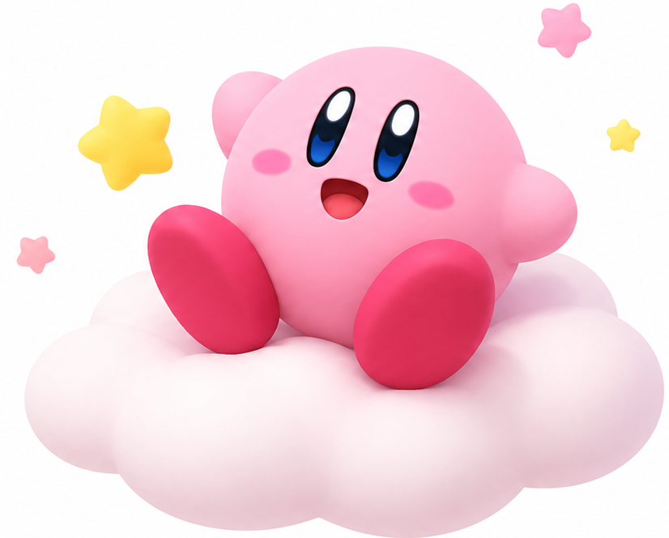
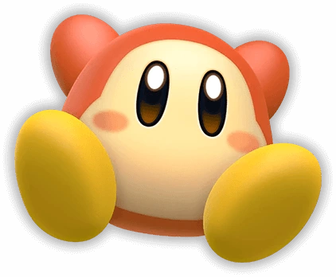
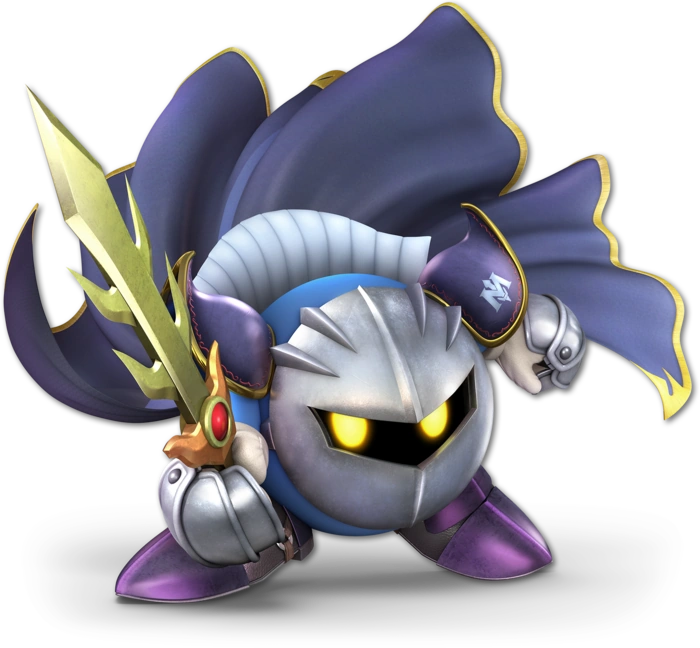
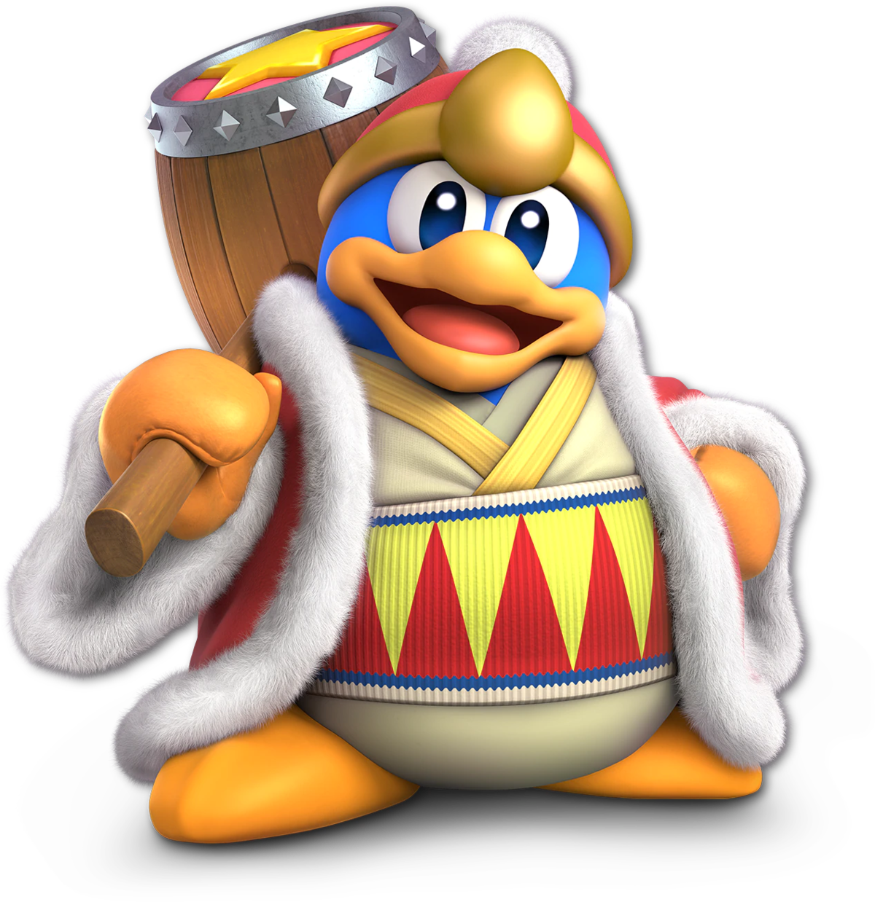

星のカービィ紹介サイト

このサイトで紹介していること
作品紹介
Nintendo Switchで遊べるカービィシリーズを紹介します!
カービィについて
カービィの特徴や能力、魅力について紹介します!
配信
簡易的なライブ配信ページで不定期に配信をしています!
カービィってなに？
カービィの仲間たち
ワドルディ

メタナイト

デデデ大王

こんな人におすすめ！
星のカービィ スターアライズ
2018年3月16日発売のSwitchソフト
ある日、宇宙の彼方で謎の儀式が行われ、世界に様々な光が放たれた。その光には「光の心」と「闇の心」を持つものがあり、光の心「フレンズハート」は昼寝をしていたカービィの元へ降り注ぐ。その一方で、闇の心を持つ「ジャマハート」がプププランドに降り注いだことにより、各地で様々な異変が起きる。カービィはワドルディ達が国中の食べ物を奪い、デデデの城へ持っていく様子を目撃する。フレンズハートによって仲間を増やす能力を手に入れたカービィは、その異変を解決すべく、新たな冒険の旅へ出る！
このゲームでは敵キャラクターを仲間にできることが目玉！仲間にしたキャラクターは「フレンズヘルパー」と呼ばれ、カービィの冒険を手助けする。炎が使えるフレンズからソードやカッターなどの武器が使えるフレンズまで！その数なんと46種類！ゲームが苦手な方はフレンズに頼ってもOK！初心者にも、上級者にもおすすめです！
スーパーカービィ ハンターズ
2019年9月5日に配信開始されたSwitchソフト はるか遠い昔、"あきれかえるほど"平和なプププランドに突如魔物が現れた。4人のカービィで結成された"カービィハンターズ"は、平和を取り戻すため、様々な戦いを通して成長していく物語の始まりだ。 カービィは「ヒーローソード・ヒールドクター・ヘビィハンマー・マジックビーム」のいずれかの”ジョブ”を持っており、それによってカービィの能力が変わる。例えばマジックビームは相手の動きを止める能力をもっていたり、ヘビィハンマーは力を溜めれば強烈な一撃を繰り出すことができたりといった個性的な能力がある。また、このゲームは基本無料でプレイ可能で、十分に遊ぶことができる上、課金をすればさらに楽しくプレイできるぞ！能力を駆使し、仲間と協力しながら巨大な敵に立ち向かえ！
カービィ ファイターズ２
星のカービィ ディスカバリー
カービィのグルメフェス
2022年8月17日発売のSwitchソフト
小さくなったカービィが大きなイチゴを食べまくる、彼にとっては最高の世界だろう！
プレイヤーはカービィを転がしながら、「レース・ミニゲーム・バトルロイヤル」の3つを通して、相手よりたくさんイチゴを食べた人が勝ち！近くの人やインターネットを通じて世界中の様々な人と対戦できるのもいいところ！
しかも価格は1500円と破格！カービィのゲームが初めての方でも気軽にプレイできるぞ！